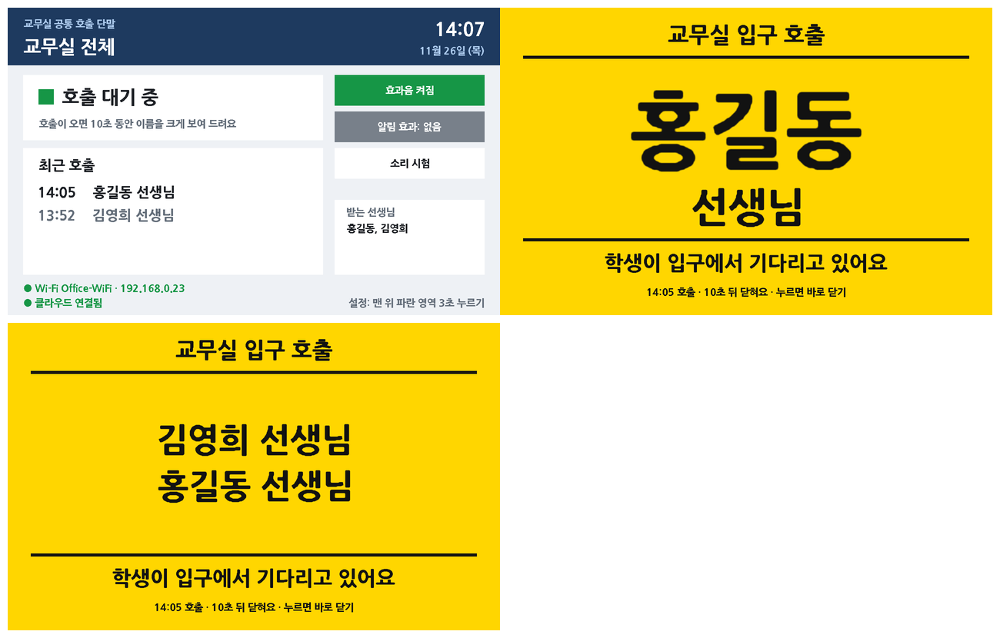
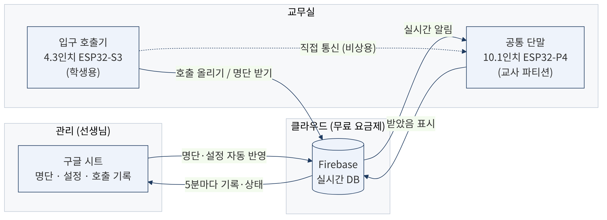
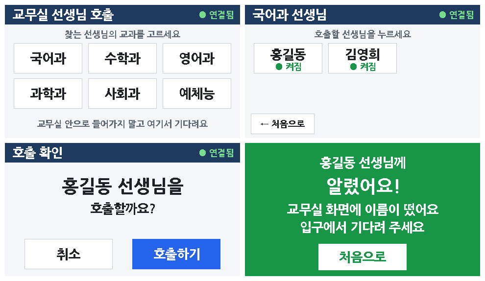
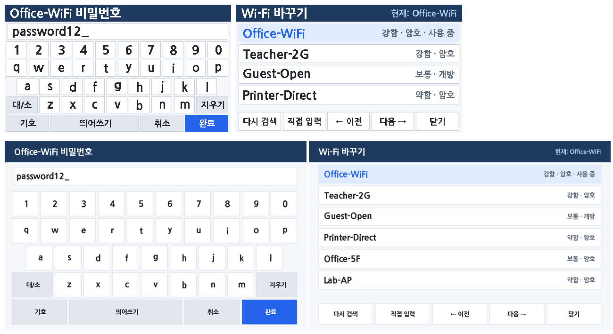
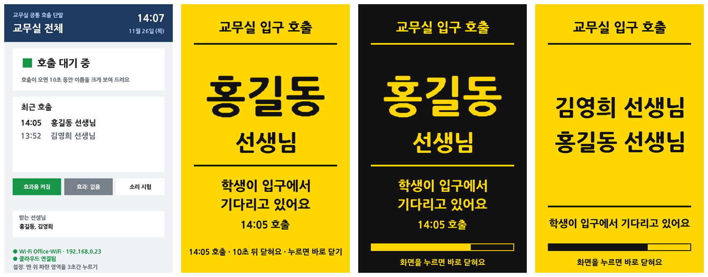

0무엇을 만드나

왜 만들었나
시험 기간에는 시험지 보안 때문에 학생이 교무실에 들어올 수 없습니다. 입구에서 안쪽 자리의 선생님을 큰 소리로 부르면 다른 선생님께 방해가 되고, 가까운 선생님이 대신 전달하는 것도 번거롭습니다. 이 시스템은 학생이 입구에서 버튼만 누르면 파티션에 놓인 화면이 해당 선생님 이름을 띄워 알려 줍니다.
기기 세 가지
특징
- 두 경로로 전달 — 클라우드(Firebase)와 같은 Wi-Fi 안 직접 통신으로 동시에 보냅니다. 학교 Wi-Fi가 기기끼리의 통신을 막아도, 인터넷이 잠깐 끊겨도 전달됩니다.
- 화면에서 설정 — Wi-Fi, 화면 방향, 효과음 크기, 알림 효과를 기기 화면에서 바꿉니다. 입구 호출기 설정은 관리자 비밀번호로 잠겨 있습니다.
- 학생 정보 없음 — 오가는 정보는 선생님 이름, 교과, 호출 시각뿐입니다.
시스템 구성

화면 미리보기



화면 미리보기는 실제 폰트와 그리기 방식으로 PC에서 만든 그림입니다. 실제 화면과 거의 같지만 색감은 조금 다를 수 있습니다.
만드는 순서
- 준비물 갖추기-
- Firebase와 구글 시트 연결약 15분
- 두 기기에 프로그램 올리기약 30분
- 설치하고 쓰기-
만들다 막히면 5. 막힌 곳과 해결을 먼저 보세요. 같은 보드로 실제로 겪은 문제와 해결 방법을 정리했습니다.
1준비물
하드웨어
| 품목 | 모델 / 사양 | 수량 | 비고 |
|---|---|---|---|
| 입구 호출기 | Guition JC4827W543C (ESP32-S3, 4.3인치 480×272, 정전식 터치) | 1 | 모델명 끝의 C가 정전식 터치입니다. R은 저항식, N은 터치 없음입니다. |
| 공통 단말 | Guition JC8012P4A1C (ESP32-P4 + ESP32-C6, 10.1인치 800×1280, 정전식 터치) | 1대 이상 | 파티션마다 한 대씩 둘 수 있습니다. |
| 스피커 | 보드 스피커 단자용 소형 스피커 (4~8Ω, 2~3W) | 단말당 1 | 보드에 스피커가 붙어 있지 않을 수 있습니다. 2핀 단자에 연결합니다. |
| USB-C 케이블 | 데이터 전송이 되는 것 | 2 | 충전 전용 케이블은 업로드가 안 됩니다. |
| 전원 어댑터 | 5V 2A 이상 USB 충전기 | 2 | 설치 후 상시 전원용입니다. |
| 거치대 / 케이스 | 3D 프린팅 또는 시중 태블릿 거치대 | 선택 |
10.1인치 보드 버전 주의: 2026년 출하분(라벨에
-V3가 붙은 SKU, 예: 10153001-V3)은 칩이 v3이고 화면 패널도 새것(V2)입니다. 코드 기본값은 이 버전에 맞춰 두었습니다. 이전 버전 보드는 03_펌웨어_올리기의 설정을 바꿔야 합니다.
네트워크
- 2.4GHz Wi-Fi가 필요합니다. 5GHz 전용은 안 됩니다.
- 인터넷이 되어야 클라우드 중계가 동작합니다. 인터넷이 없으면 같은 Wi-Fi 안 직접 통신만 동작합니다.
- 학교 무선망 확인: 등록된 기기만 접속을 허용하거나, 아이디와 비밀번호를 함께 쓰는 기업용 인증일 수 있습니다. 정보 담당 선생님께 "IoT 기기 무선 접속 가능 여부"를 확인하세요. 시험 단계에서는 휴대폰 핫스팟이나 공유기 한 대로 충분합니다.
소프트웨어와 계정 (모두 무료)
| 항목 | 버전 / 비고 |
|---|---|
| Arduino IDE | 2.x |
| ESP32 보드 패키지 | esp32 by Espressif Systems 3.3.x (3.3.13에서 확인) |
| 라이브러리: GFX Library for Arduino | 1.6.9 이상 (만든 이: Moon On Our Nation). 이름이 비슷한 Adafruit GFX와 다릅니다. |
| 라이브러리: U8g2 | 최신. 한글 폰트 표시 기능을 켜는 데 필요합니다. |
| 라이브러리: ArduinoJson | 7.x |
| 구글 계정 | 구글 시트와 Firebase에 같은 계정을 씁니다. 학교 계정은 외부 연결이 막혀 있을 수 있어 개인 계정을 권장합니다. |
| Firebase | Spark(무료) 요금제. 동시 접속 100대까지 가능해서 학교 규모에 충분합니다. |
2클라우드 설정
구글 시트에서 명단을 고치면 Firebase를 거쳐 기기에 전달되고, 입구 호출기의 호출도 Firebase를 거쳐 공통 단말에 실시간으로 전달됩니다. 아래 순서대로 약 15분이면 끝납니다.
클라우드 없이 같은 Wi-Fi 안에서만 쓰려면 이 단계를 건너뛰고,
config.h의FIREBASE_DB_URL을""(빈 값)으로 두면 됩니다.
1. Firebase 프로젝트 만들기
Firebase 콘솔에서 구글 시트를 만들 계정과 같은 계정으로 진행합니다.
- 프로젝트 만들기: 이름은 자유롭게 정하고, Google 애널리틱스는 꺼도 됩니다.
- 같은 이름이 이미 있으면 프로젝트 ID 뒤에
-a1b2c같은 글자가 자동으로 붙습니다. DB 주소에는 이 ID가 들어가니 나중에 꼭 확인하세요.
- 같은 이름이 이미 있으면 프로젝트 ID 뒤에
- 실시간 데이터베이스 만들기: 빌드 > Realtime Database > 데이터베이스 만들기를 누릅니다.
- 위치는 싱가포르(asia-southeast1)를 고릅니다. Realtime Database는 아이오와, 벨기에, 싱가포르 세 곳만 지원하고, 서울은 없습니다.
- 보안 규칙은 잠금 모드로 시작합니다.
- 규칙 탭에
code/firebase/database.rules.json내용을 붙여 넣고 게시합니다. - 데이터 탭 위쪽의 주소(
https://…firebasedatabase.app)를 복사해 둡니다. 이것이 DB 주소입니다.
- 기기용 계정 만들기: 빌드 > Authentication > 시작하기를 누릅니다.
- 로그인 방법에서 이메일/비밀번호를 사용 설정합니다.
- 사용자 탭 > 사용자 추가에서
device@callsys.local과 비밀번호를 만듭니다. 실제로 없는 메일 주소여도 됩니다.
- 웹 API 키 찾기: 톱니바퀴 프로젝트 설정 > 일반으로 갑니다.
- "웹 API 키" 칸이 있으면 그 값을 복사합니다.
- 칸이 없으면 아래쪽 내 앱에서
</>(웹) 아이콘으로 웹앱을 하나 등록합니다(호스팅 설정은 체크하지 않음). 그러면 나오는 코드의apiKey: "AIza…"값이 웹 API 키입니다.
2. 구글 시트 연결
- 새 구글 시트를 만듭니다(예: "교무실 호출 관리").
- 확장 프로그램 > Apps Script를 엽니다.
- 왼쪽 톱니바퀴 프로젝트 설정에서 "appsscript.json" 매니페스트 파일 표시를 체크합니다.
- 편집기의
appsscript.json내용을code/google_sheet/appsscript.json으로 바꿉니다. Code.gs내용을code/google_sheet/Code.gs로 바꾸고, 맨 위FIREBASE_URL에 DB 주소를 넣고 저장합니다.
- 위쪽 함수 목록에서 setup을 고르고 실행합니다.
- 권한 요청이 뜨면 허용합니다. "확인되지 않은 앱" 경고는 고급 > (프로젝트)로 이동을 누르면 됩니다. 내가 만든 스크립트라서 나오는 경고입니다.
- 시트를 새로고침하면 시트 4개와 메뉴 호출 시스템이 생깁니다.
| 시트 | 내용 |
|---|---|
| 선생님 명단 | ID, 이름, 교과, 사용 여부. 행 순서가 입구 화면 순서입니다. ID는 비워 두면 자동으로 붙고, [사용]을 끄면 입구 화면에서 숨겨집니다. |
| 설정 | 알림 표시 시간(초), 처음 깜빡임 시간(초), 같은 선생님 재호출 제한(초), 효과음 크기(1~10) |
| 호출 기록 | 호출 시각, 선생님, 교과, 받은 단말 수. 5분마다 자동으로 추가됩니다. |
| 단말 상태 | 기기별 종류, 받는 선생님, 마지막 신호, 켜짐/꺼짐 |
- Firebase 콘솔 데이터 탭에
config가 보이면 연결된 것입니다.
알아 두기
- 반영 시간: 시트를 고치면 자동으로 Firebase에 올라가고, 기기는 1분마다 확인합니다. 화면 오른쪽 아래에 "반영했어요" 알림이 안 뜨면 메뉴 호출 시스템 > 단말에 반영하기를 누릅니다.
- 표시할 수 없는 글자: 이름에 기기 폰트로 표시할 수 없는 글자(한글 2,350자 밖, 예: "똠")가 있으면 그 칸이 빨갛게 표시되고 메모로 알려 줍니다.
- 기록 보관: Firebase에는 하루치 호출만 남기고 지웁니다. 기록은 시트에 계속 쌓입니다.
3펌웨어 올리기
1. Arduino IDE 준비 (처음 한 번)
- 보드 매니저에서
esp32 by Espressif Systems3.3.x를 설치합니다. - 라이브러리 매니저에서 3개를 설치합니다.
GFX Library for Arduino(Moon On Our Nation) 1.6.9 이상U8g2ArduinoJson7.x
2. config.h 채우기
code/entrance_caller/config.h와 code/shared_terminal/config.h에 같은 내용을 넣습니다.
#define WIFI_SSID "와이파이 이름" // 처음 접속용. 나중에 기기 화면에서 바꿀 수 있음
#define WIFI_PASS "비밀번호"
#define FIREBASE_DB_URL "https://…firebasedatabase.app" // 02단계의 DB 주소 ("" 이면 클라우드 없이 사용)
#define FIREBASE_API_KEY "AIza…" // 02단계의 웹 API 키
#define DEVICE_EMAIL "device@callsys.local" // 02단계에서 만든 기기용 계정
#define DEVICE_PASSWORD "…"
#define ADMIN_PIN "0000" // 입구 호출기 관리 메뉴 비밀번호
따옴표가 두 번 들어가지 않게 주의하세요(
"AIza…""처럼 되면 컴파일 오류가 납니다).
처음 켤 때 쓰는 기본 명단은 teachers.h에 있습니다. 시트 명단을 한 번 받으면 기기에 저장되어, 그 뒤로는 시트 명단을 씁니다.
3. 보드 설정과 업로드
| 항목 | 입구 호출기 (entrance_caller.ino) |
공통 단말 (shared_terminal.ino) |
|---|---|---|
| 보드 | ESP32S3 Dev Module | ESP32P4 Dev Module |
| Chip Variant | - | v3.00 or newer (업로드 로그에 revision v1.x가 보이면 Before v3.00) |
| Flash Size | 4MB | - |
| PSRAM | OPI PSRAM | Enabled |
| Partition Scheme | Huge APP (3MB No OTA/1MB SPIFFS) | Huge APP (3MB No OTA/1MB SPIFFS) |
| Upload Speed | 921600 | 921600 |
- 첫 컴파일은 한글 폰트 때문에 몇 분 걸립니다. 폰트는
fonts.cpp로 분리해 두어서, 이후 코드나 명단을 고칠 때는 빨리 끝납니다. - 10.1인치 화면이 안 나오면
terminal_app.cpp맨 위의LCD_PANEL_V2를 바꿉니다. 1은 새 패널, 0은 이전 패널입니다.
4. 처음 켰을 때 확인
시리얼 모니터(115200)를 열면 과정이 자세히 나옵니다.
| 확인할 것 | 정상 |
|---|---|
| 공통 단말 아래쪽 | ● Wi-Fi (이름) · IP, ● 클라우드 연결됨 |
| 입구 호출기 오른쪽 위 | 초록 ● 연결됨 (주황 ● 직접 통신은 클라우드 미연결, 빨강은 Wi-Fi 미연결) |
시리얼 [소리] 줄 |
I2C 장치 찾기: 0x18 …, 코덱 ID: 83 11, 효과음 준비 완료 |
시리얼 [클라우드] 줄 |
클라우드 연결됨, 실시간 스트림 연결 (공통 단말) |
5. 10.1인치 보드 Wi-Fi 칩 펌웨어 (필요할 때만)
공통 단말이 Wi-Fi를 검색은 하는데 접속을 못 하면, 보드의 Wi-Fi 보조칩(ESP32-C6) 펌웨어가 오래된 것입니다.
code/tools/wifi_test를 올리면 시리얼 모니터에 "보조칩 펌웨어가 오래됨"이 표시됩니다.code/tools/c6_update를 한 번 올리면 인터넷 없이 펌웨어가 업데이트됩니다. 펌웨어가 프로그램 안에 들어 있고, 1분 안에 끝납니다.- 다시
shared_terminal을 올립니다.
이 작업은 보드마다 한 번만 하면 됩니다.
점검용 스케치 (code/tools)
| 스케치 | 용도 |
|---|---|
display_test |
10.1인치 화면을 단계별로 점검합니다(백라이트, 초기화, 색 화면). |
wifi_test |
주변 Wi-Fi 목록, 채널, 신호, 보조칩 버전, 접속 실패 이유를 보여 줍니다. 두 보드 공용입니다. |
c6_update |
10.1인치 보드의 Wi-Fi 보조칩 펌웨어를 업데이트합니다(v2.12.13 내장). |
4사용법
학생 (입구 호출기)
- 찾는 선생님의 교과를 누릅니다.
- 선생님 이름을 누릅니다. 이름 아래
● 켜짐이면 그 선생님 호출을 받는 단말이 켜져 있다는 뜻입니다. - 호출하기를 누릅니다.
- "선생님께 알렸어요!"가 뜨면 입구에서 기다립니다.
| 화면 | 뜻 |
|---|---|
| "조금 전에 이미 알렸어요" | 같은 선생님을 30초 안에 다시 눌렀습니다. 장난 호출을 막기 위해 다시 보내지 않습니다. 시간은 시트에서 바꿉니다. |
| "교무실 단말에 연결되지 않았어요" | 약 12초 동안 전달 확인이 없었습니다. 단말 전원이나 Wi-Fi를 확인하세요. |
선생님 (공통 단말)
호출이 오면 노란 화면에 이름이 크게 뜨고 "띵-동" 소리가 납니다. 정해진 시간(기본 10초)이 지나면 대기 화면으로 돌아가고, 화면을 누르면 바로 닫힙니다. 놓친 호출은 대기 화면의 최근 호출에서 볼 수 있습니다.
대기 화면 버튼
| 버튼 | 동작 |
|---|---|
| 효과음 켜짐/꺼짐 | 효과음을 끄고 켭니다. 보드의 BOOT 버튼으로도 됩니다. |
| 알림 효과 | 누를 때마다 바뀝니다. 없음(기본, 화면 고정) → 깜빡임(처음 몇 초 동안 1초 간격으로 노랑/검정) → 부드럽게(배경이 노랑과 주황 사이를 천천히 오감) |
| 소리 시험 | 지금 크기로 효과음을 들려줍니다. |
설정 화면 (맨 위 파란 영역을 3초 누르기)
| 항목 | 동작 |
|---|---|
| 전체 선택 / 모두 해제 / 선생님 버튼 | 이 단말이 받을 선생님을 고릅니다. 파티션마다 단말을 두면 각자 맡은 선생님만 받습니다. 두 단말이 같은 선생님을 맡으면 둘 다 울립니다. |
| 화면: 가로 | 누를 때마다 세로 → 가로 → 세로(반대) → 가로(반대)로 바뀌고 바로 저장됩니다. |
| Wi-Fi: (이름) | Wi-Fi를 바꿉니다(아래 참고). |
| 소리 - / + | 효과음 크기(1~10)를 바꾸면 바로 들려줍니다. 시트의 "효과음 크기"와 둘 중 나중에 바꾼 값이 적용됩니다. |
| 저장하고 닫기 | 받을 선생님 선택을 저장합니다. |
Wi-Fi 바꾸기 (두 기기 공통)
- 공통 단말: 설정 화면에서 Wi-Fi: (이름) 버튼을 누릅니다.
- 입구 호출기: 처음 화면 위쪽 파란 띠를 5초 누르고, 관리자 비밀번호(
ADMIN_PIN, 기본0000)를 넣은 뒤 Wi-Fi 바꾸기를 누릅니다. 관리 메뉴에서는 Wi-Fi, IP, 클라우드 상태도 볼 수 있습니다.
이후 순서는 같습니다.
- 목록에서 Wi-Fi를 고릅니다. 숨김 Wi-Fi는 직접 입력을 씁니다.
- 화면 키보드로 비밀번호를 넣고 완료를 누릅니다. 대문자는 대/소, 특수문자는 기호 버튼으로 바꿉니다.
- 15초 안에 연결되면 저장되고, 다시 켜도 그 Wi-Fi를 씁니다. 실패하면 원래 Wi-Fi로 돌아갑니다.
관리자 (구글 시트)
| 하고 싶은 일 | 방법 |
|---|---|
| 선생님 추가 | [선생님 명단]에 이름과 교과를 적습니다. ID는 비워 두면 됩니다. |
| 잠시 숨기기 | [사용] 체크를 끕니다. |
| 순서 바꾸기 | 행 순서를 바꿉니다. |
| 알림 시간, 효과음 크기 | [설정] 시트의 값을 바꿉니다. |
| 호출 통계 | [호출 기록] 시트를 피벗 테이블이나 차트로 정리합니다. |
| 기기 상태 확인 | [단말 상태] 시트를 봅니다. 마지막 신호가 2분 넘게 없으면 "꺼짐"으로 표시됩니다. |
5막힌 곳과 해결
같은 보드로 따라 만들다 보면 만날 가능성이 높은 문제들입니다. 실제로 겪은 순서대로 정리했습니다.
설계 단계
ESP-NOW로 연결하려 했는데 10.1인치 보드에서 안 됨
- 원인: 10.1인치 보드(ESP32-P4)는 Wi-Fi를 보조칩(ESP32-C6)을 거쳐 씁니다. 이 구조(ESP-Hosted)에서는 ESP-NOW가 공식 지원되지 않습니다.
- 해결: 같은 Wi-Fi 안 UDP 브로드캐스트로 바꾸고, 나중에 클라우드(Firebase) 중계를 더해 두 경로로 동시에 보냅니다.
실시간 DB 위치에 서울이 없음
- 원인: Firebase Realtime Database는 아이오와, 벨기에, 싱가포르만 지원합니다. 서울은 Firestore 등 다른 제품에만 있습니다.
- 해결: 싱가포르를 선택했습니다. 왕복 지연이 0.1초 안팎이라 체감 차이가 없습니다.
화면
10.1인치 화면이 아예 꺼진 채로 재부팅 반복
- 증상: 시리얼에
abort() was called와Rebooting...이 반복됩니다. - 원인: 화면 라이브러리 GFX Library for Arduino 1.6.7 이하는 새 칩(ESP32-P4 v3)의 화면 신호 설정을 몰라서, 초기화하다 멈춥니다.
- 해결: 라이브러리를 1.6.9로 올렸습니다. 이름이 비슷한 Adafruit GFX Library와 헷갈리기 쉬우니, 만든 이가 Moon On Our Nation인지 확인하세요.
- 점검 방법:
tools/display_test로 백라이트, 초기화, 색 화면을 단계별로 확인할 수 있습니다.
jd9365_type1_init_operations was not declared 컴파일 오류
- 원인: 라이브러리 버전마다 화면 초기화 값의 이름이 다릅니다.
- 해결: 초기화 값을 프로젝트 안(
lcd_panel_v1.h,lcd_panel_v2.h)에 직접 넣어 버전과 상관없이 컴파일되게 했습니다.
새 패널(V2)
- 원인: 2026년 출하 보드(SKU
-V3)는 화면 패널이 바뀌어 초기화 값과 신호 속도가 다릅니다. - 해결:
LCD_PANEL_V2 1이 새 패널,0이 이전 패널입니다.
알림 화면이 계속 깜빡임
- 원인: 남은 시간 막대를 갱신하려고 0.5초마다 화면 전체를 지우고 다시 그렸는데, 큰 글씨를 그리는 동안 지워진 상태가 눈에 보였습니다. 기기 고장이 아니었습니다.
- 해결: 보이지 않는 메모리(캔버스)에 먼저 다 그린 뒤 한 번에 화면으로 옮기는 이중 버퍼로 바꿨습니다. 알림 효과의 기본값도 "없음"(화면 고정)으로 했습니다.
큰 이름이 계단처럼 각져 보임
- 원인: 기기에 넣을 수 있는 한글 폰트는 48픽셀까지입니다. 이를 4배 이상 키우면 계단이 생깁니다.
- 해결: 글자를 살짝 흐리게 한 뒤 확대하고, 가장자리를 다시 또렷하게 다듬어 그립니다. 폰트 파일을 늘리지 않고도 매끈해졌습니다.
입구 호출기 터치 위치가 180도 반대
- 해결:
caller_app.cpp의TOUCH_MIRROR_X,TOUCH_MIRROR_Y로 맞춥니다.TOUCH_DEBUG를 켜면 누른 곳에 점이 찍혀서 확인하기 쉽습니다.
Wi-Fi
10.1인치 보드가 Wi-Fi 검색은 되는데 접속을 못 함
- 증상:
wifi_test에서 끊김 이유가 계속8 (ASSOC_LEAVE)만 나옵니다. - 원인: 보조칩 펌웨어가 2.3.2로, 본체 쪽 2.12.13보다 너무 오래되어 접속 명령이 전달되지 않았습니다.
- 해결: 공식 업데이트 예제(ESP_HostedOTA)는 Wi-Fi로 인터넷에 접속해야 해서 쓸 수 없었습니다. 그래서 펌웨어를 프로그램 안에 넣어 보조칩에 직접 써 넣는
tools/c6_update를 만들었습니다.
학교 Wi-Fi 접속 실패 (끊김 이유 36)
- 원인: 비밀번호 문제가 아니라, 공유기가 등록되지 않은 기기를 내보낸 것입니다(MAC 주소 등록제 또는 기업용 인증).
- 해결: 정보 담당에게 기기 MAC 주소(
wifi_test에 표시)로 등록을 요청합니다. 그동안은 핫스팟이나 별도 공유기로 시험했습니다. 클라우드 중계 구조라 인터넷만 되면 어떤 Wi-Fi든 됩니다.
Wi-Fi가 바뀔 때마다 다시 업로드해야 함
- 해결: 기기 화면에서 Wi-Fi를 고르고 비밀번호를 입력하는 기능을 넣었습니다(
wifi_ui). 입구 호출기는 관리자 비밀번호로 잠갔습니다.
소리
효과음이 안 남
- 점검 순서: 시리얼의
[소리]줄로 오디오 칩(ES8311, I2C 0x18, ID 83 11)과 소리 데이터 전송을 확인했는데 모두 정상이었습니다. - 원인: 스피커가 연결되어 있지 않았습니다. 보드 스피커 단자에 연결하니 해결됐습니다. 앰프를 켜는 신호(GPIO20)는 HIGH가 맞습니다.
- 조정: 소리를 부드러운 "띵-동"으로 바꾸고, 크기는 시트와 기기 화면에서 1~10으로 조절하게 했습니다.
개발 환경
업로드 전 컴파일이 너무 오래 걸림
- 원인: 한글 폰트 데이터(약 1MB)가 본체 파일에 포함되어, 코드를 조금만 고쳐도 매번 다시 컴파일됐습니다.
- 해결: 폰트를
fonts.cpp로 분리했습니다. 테스트 환경 기준으로 재컴파일이 약 53초에서 6초로 줄었습니다. Upload Speed가 921600인지도 확인하세요.
Firebase 웹 API 키가 프로젝트 설정에 안 보임
- 해결: 내 앱에서 웹앱을 하나 등록하면 나오는
apiKey값을 씁니다.
DB 주소가 프로젝트 이름과 다름
- 원인: 프로젝트 ID에
-a1b2c같은 글자가 붙을 수 있습니다. - 해결: 주소는 Realtime Database 데이터 탭에 보이는 것을 그대로 복사합니다.
6구조와 통신
설계 원칙
- 명단은 한 곳에서 관리: 구글 시트 → Firebase
/config→ 모든 기기. 기기는 받은 명단을 저장해 두어서, 인터넷 없이 켜져도 동작합니다. - 호출은 두 경로로: 입구 호출기는 같은 호출 ID로 클라우드와 같은 Wi-Fi 직접 통신(UDP)에 동시에 보냅니다. 단말은 먼저 도착한 것으로 한 번만 알리고, 받았다는 표시(RECV)를 양쪽으로 돌려보냅니다.
- 화면이 멈추지 않게: 클라우드 통신은 별도 작업(FreeRTOS 태스크)에서 돌아갑니다.
- 시각은 서버 기준: NTP가 막힌 학교망을 위해, Firebase 응답의
Date헤더로 시각을 맞춥니다.
Firebase 데이터 구조
| 위치 | 쓰는 쪽 | 내용 |
|---|---|---|
/config |
구글 시트 | teachers: [{id, name, subject}], settings: {alertSeconds, flashSeconds, repeatBlockSeconds, soundLevel} |
/calls/{호출ID} |
입구 호출기 | tid, name, subject, from, ts(서버 시각). 단말이 받으면 recv/{단말ID}에 시각을 기록합니다. |
/devices/{기기ID} |
각 기기 | type(terminal/entrance), covers("*" 또는 "T01,T02"), ip, lastSeen. 공통 단말은 30초, 입구 호출기는 60초마다 씁니다. |
- 보안 규칙(
firebase/database.rules.json): 기기용 계정으로 로그인한 경우만 읽고 쓸 수 있습니다./config는 기기에서 쓰기 금지이고, 시트 스크립트는 소유자 권한으로 씁니다. - 실시간 수신: 공통 단말은
/calls를 REST 스트리밍(Server-Sent Events)으로 받습니다. 20초보다 오래된 호출과 이미 받은 호출은 무시합니다. - 정리: 시트 스크립트가 5분마다 호출 기록을 시트로 옮기고, 하루 지난 호출은 Firebase에서 지웁니다.
같은 Wi-Fi 직접 통신 (UDP 47800번 포트, 브로드캐스트)
| 메시지 | 보내는 쪽 | 의미 |
|---|---|---|
CALL\|CALL\|호출ID\|선생님ID\|이름\|교과 |
입구 | 호출. 전달 확인이 올 때까지 0.8초마다 다시 보냅니다(최대 약 12초). |
CALL\|RECV\|호출ID\|선생님ID |
공통 단말 | 받았음 |
CALL\|HB\|받는선생님\|상태 |
공통 단말 | 3초마다 보내는 생존 신호. 받는 선생님은 *(전체) 또는 T01,T02 |
맨 앞의 CALL은 config.h의 SYSTEM_TAG입니다. 같은 Wi-Fi에 다른 학교나 다른 시스템이 있으면 바꿔서 구분합니다.
주요 소스 파일
| 파일 | 역할 |
|---|---|
cloud.cpp (두 기기 공용) |
Firebase 로그인, REST, 실시간 스트림, 명단 캐시, 서버 시각 |
wifi_ui.cpp (두 기기 공용) |
Wi-Fi 검색 목록, 화면 키보드, 접속 확인과 저장 |
caller_app.cpp |
입구 호출기 화면과 호출 흐름, 관리 메뉴 |
terminal_app.cpp |
공통 단말 화면(가로/세로), 큰 글씨, 알림 효과, 설정 화면 |
sound.cpp |
ES8311 코덱 설정과 효과음 합성(I2S 16kHz) |
gt911_touch.h / src/touch/ |
4.3인치 GT911, 10.1인치 GSL3680 터치 드라이버 |
fonts.cpp, font_kr*.h |
나눔고딕 한글 2,350자 비트맵 폰트(u8g2 형식) |
google_sheet/Code.gs |
시트 → Firebase 반영, 기록·상태 가져오기, 글자 검사 |
하드웨어 핀 (참고)
| 기능 | 입구 호출기 (JC4827W543C) | 공통 단말 (JC8012P4A1C) |
|---|---|---|
| 화면 | QSPI: CS 45, SCK 47, D0~D3 21/48/40/39, 백라이트 1 | MIPI-DSI, 리셋 27, 백라이트 23 |
| 터치 | GT911: SDA 8, SCL 4, INT 3, RST 38 | GSL3680: SDA 7, SCL 8, RST 22, INT 21 |
| 소리 | - | ES8311(I2C 0x18): MCLK 13, BCLK 12, WS 10, DOUT 9, 앰프 20 |
| Wi-Fi | 내장 | ESP32-C6 (SDIO: CLK 18, CMD 19, D0~D3 14~17, RST 54) |
7더 해 볼 수 있는 것
동아리나 심화 프로젝트 과제로 쓰기 좋은 확장 아이디어입니다.
- 응답 기능 — 공통 단말에서 "지금 나갈게요 / 5분 후 / 자리에 안 계세요"를 누르면 입구에 표시하기 (초기 버전에서 시험했던 기능)
- 시간표와 감독 일정 연동 — 시험 감독 중인 선생님을 호출하면 입구에 "3교시 감독 중, 10:40 이후에 오세요"라고 자동 안내하기
- 파티션별 단말 — 단말마다 받을 선생님을 나눠 여러 대 설치하기 (이미 지원)
- 교사 휴대폰 알림 — 호출 기록을 메신저나 푸시 알림으로 보내기
8파일 받기
코드, 안내 문서, 화면 그림, 라이선스 안내를 한 번에 받습니다. 압축을 풀고 README.md부터 보세요.
config.h와 Code.gs의 Wi-Fi·Firebase 값은 모두 "여기에_…" 자리표시자입니다. 내 값을 넣은 파일은 깃허브 같은 공개된 곳에 올리지 마세요.
코드 안내
| 폴더 | 대상 | 여는 파일 |
|---|---|---|
entrance_caller/ |
입구 호출기 (JC4827W543C) | entrance_caller.ino |
shared_terminal/ |
공통 단말 (JC8012P4A1C) | shared_terminal.ino |
google_sheet/ |
구글 시트 Apps Script | Code.gs, appsscript.json |
firebase/ |
Firebase 보안 규칙 | database.rules.json |
tools/display_test/ |
10.1" 화면 점검 | display_test.ino |
tools/wifi_test/ |
Wi-Fi 점검 (두 보드 공용) | wifi_test.ino |
tools/c6_update/ |
10.1" Wi-Fi 보조칩 펌웨어 업데이트 | c6_update.ino |
- 두 스케치의
config.h에 Wi-Fi와 Firebase 정보를 같게 넣습니다. 자세한 방법은../docs/03_펌웨어_올리기.md에 있습니다. .ino파일에는 설명만 있고, 프로그램 본체는caller_app.cpp와terminal_app.cpp에 있습니다(Arduino IDE에서 탭으로 보입니다).- 컴파일 확인 환경: Arduino ESP32 core 3.3.13, GFX Library for Arduino 1.6.9 (1.6.8에서도 확인), U8g2 2.37, ArduinoJson 7.4.
9사용한 외부 자료와 라이선스
이 프로젝트를 공개하거나 배포할 때 아래 자료의 라이선스를 함께 지켜 주세요.
| 자료 | 사용한 곳 | 출처 | 라이선스 |
|---|---|---|---|
| 나눔고딕 ExtraBold | font_kr*.h (한글 2,350자 + 영문을 u8g2 비트맵으로 변환) |
네이버 / Google Fonts | SIL Open Font License 1.1 |
| GSL3680 터치 드라이버 | code/shared_terminal/src/touch/ |
Guition 제공 코드 기반, CelliesProjects/JC8012P4A1-Arduino_GFX | esp_lcd_touch.*: Apache-2.0, gsl_point_id.c: GPL v2. 나머지는 원 출처의 조건을 따릅니다. |
| 10.1" 새 패널(V2) 초기화 값, 오디오 핀 정보 | lcd_panel_v2.h, sound.cpp |
chickymonkey/guition-10.1-inch-esp32-p4 | MIT |
| 10.1" 이전 패널(V1) 초기화 값 | lcd_panel_v1.h |
Arduino_GFX | Arduino_GFX 라이선스를 따름 |
| ESP-Hosted 보조칩 펌웨어 v2.12.13 | code/tools/c6_update/c6_firmware.cpp |
Espressif (arduino-esp32 배포본) | Apache-2.0 |
| ES8311 초기화 순서 | sound.cpp |
ESPHome es8311 컴포넌트 참고 | (참고 구현) |
이 프로젝트의 코드
나머지 코드(입구 호출기, 공통 단말 본체, 클라우드 모듈, Wi-Fi 설정 화면, 구글 시트 스크립트)의 라이선스는 만든 사람이 정해 주세요(예: MIT).
gsl_point_id.c가 GPL v2이므로, 공통 단말(shared_terminal) 펌웨어를 바이너리로 배포할 때는 GPL 조건(소스 공개)을 함께 지켜야 합니다.